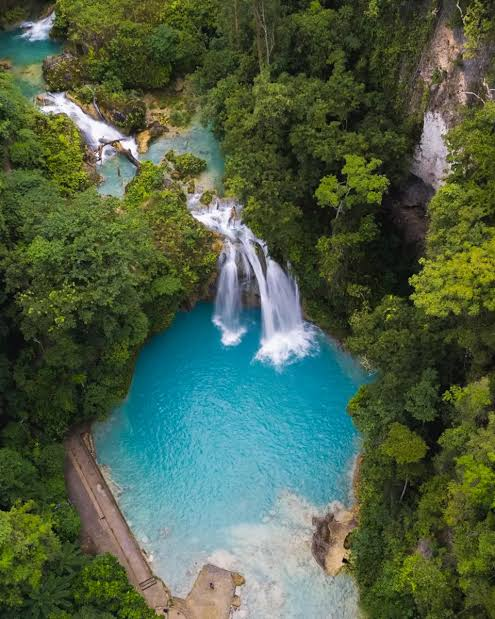
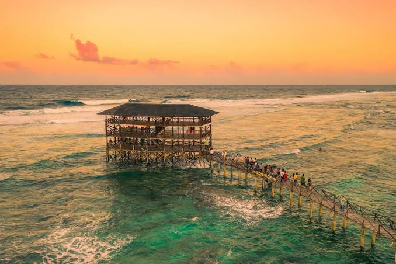

Boracay

Boracay is a small island in the Visayas known worldwide for White Beach, its four-kilometer stretch of fine white sand and clear turquoise water, popular for swimming and island hopping.
Discover five breathtaking destinations worth visiting.
The Philippines is home to some of the most stunning natural wonders in Southeast Asia. From white sand beaches to ancient rice terraces, here are five spots every traveler should see.
Boracay is a small island in the Visayas known worldwide for White Beach, its four-kilometer stretch of fine white sand and clear turquoise water, popular for swimming and island hopping.

A spectacular limestone karst landscape and an 8.2-kilometer underground river that flows directly into the sea.

More than a thousand symmetrical, cone-shaped hills spread across Bohol's countryside. They turn chocolate-brown in the dry season, giving the landmark its name.

Visitors can swim in the cool natural pools or rent bamboo rafts to glide underneath the cascading water.

Known as the surfing capital of the Philippines, Siargao draws visitors to its famous Cloud 9 break, as well as its lagoons, island hopping tours, and laid-back island atmosphere.